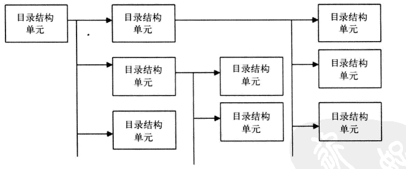
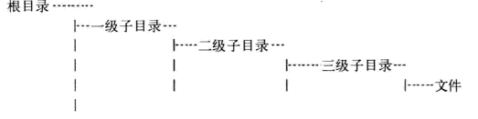
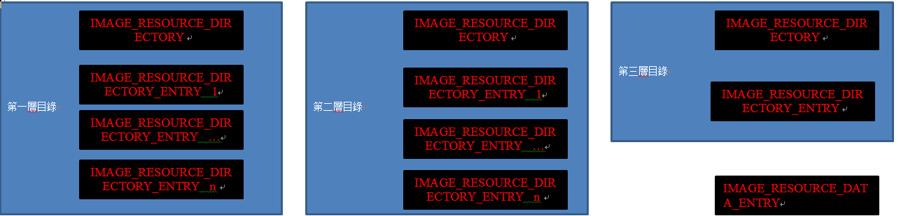

資源表
資源表用於保存 程序需要用到的資源
資源表一三層結構表示 每層包含一個 IMAGE_RESOURCE_DIRECTORY 和 IMAGE_RESOURCE_DIRECTORY_ENTRY 結構
IMAGE_RESOURCE_DIRECTORY 用以確定其後緊跟的 IMAGE_RESOURCE_DIRECTORY_ENTRY 數目
typedef struct _IMAGE_RESOURCE_DIRECTORY {
DWORD Characteristics; //必須為0
DWORD TimeDateStamp; //創建時間
WORD MajorVersion; //資源版本號 大部分為0
WORD MinorVersion; //同上
WORD NumberOfNamedEntries; //以名稱命名資源個數
WORD NumberOfIdEntries; //以id命名資源個數
// IMAGE_RESOURCE_DIRECTORY_ENTRY DirectoryEntries[];
} IMAGE_RESOURCE_DIRECTORY, *PIMAGE_RESOURCE_DIRECTORY;
typedef struct _IMAGE_RESOURCE_DIRECTORY_ENTRY {
union {
struct {
DWORD NameOffset:31;
DWORD NameIsString:1; //是否是以名稱命名
} DUMMYSTRUCTNAME;
DWORD Name; //名稱相對資源表偏移 指向IMAGE_RESOURCE_DIR_STRING_U結構
WORD Id;
} DUMMYUNIONNAME; //名稱或id
union {
DWORD OffsetToData;
struct {
DWORD OffsetToDirectory:31;
DWORD DataIsDirectory:1; //為1 低位指向下層目錄 否則指向最終資源塊(當第三層時)
} DUMMYSTRUCTNAME2;
} DUMMYUNIONNAME2; //指向下層資源 相對資源表偏移
} IMAGE_RESOURCE_DIRECTORY_ENTRY, *PIMAGE_RESOURCE_DIRECTORY_ENTRY;
typedef struct _IMAGE_RESOURCE_DIR_STRING_U {
WORD Length; //名稱長度不包含 0 且 不以0為字符串結尾
WCHAR NameString[ 1 ];
} IMAGE_RESOURCE_DIR_STRING_U, *PIMAGE_RESOURCE_DIR_STRING_U;
图解



第一層 每個IMAGE_RESOURCE_DIRECTORY_ENTRY代表了一種資源類型 並且最終指向一個第二層結構
第二層 每個IMAGE_RESOURCE_DIRECTORY_ENTRY代表了一個資源的id或名稱 並且最終指向一個第三層資源
第三層 每個IMAGE_RESOURCE_DIRECTORY_ENTRY最終指向IMAGE_RESOURCE_DATA_ENTRY
IMAGE_RESOURCE_DATA_ENTRY標明了資源的RVA和大小